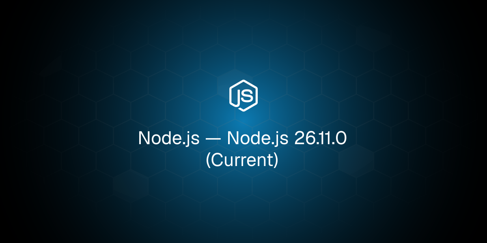
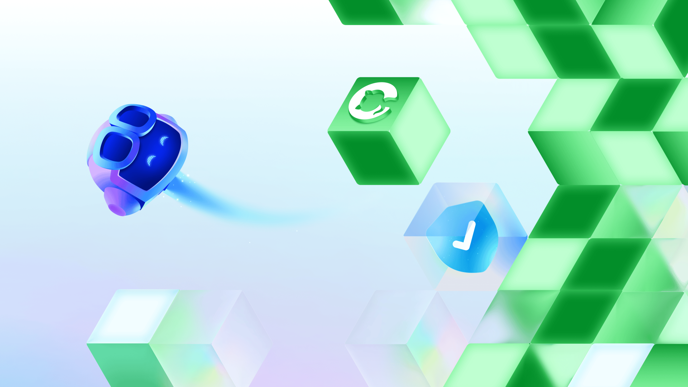
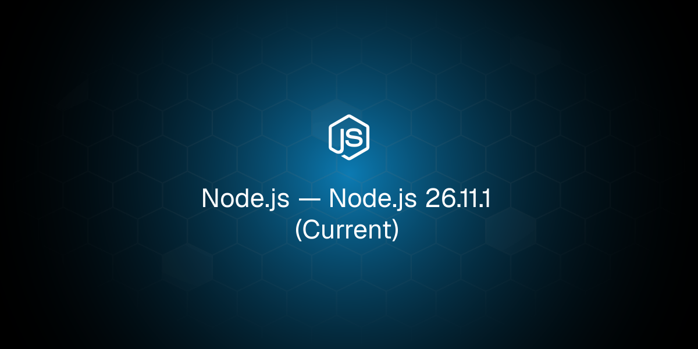
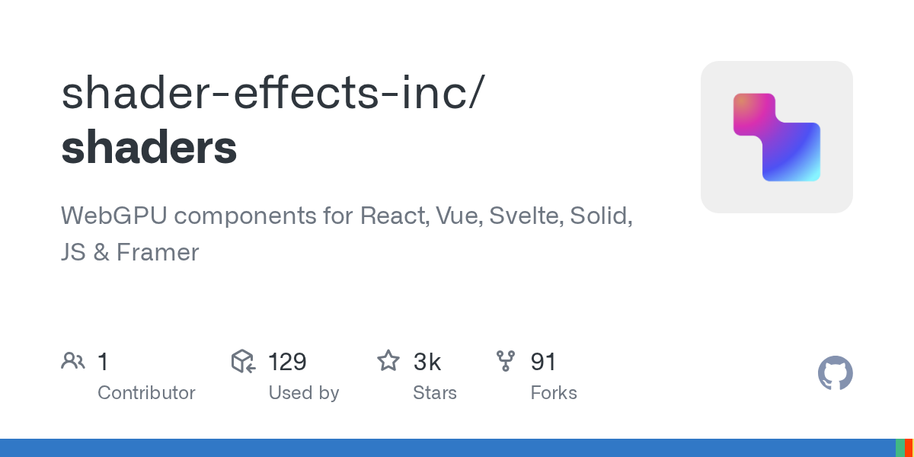
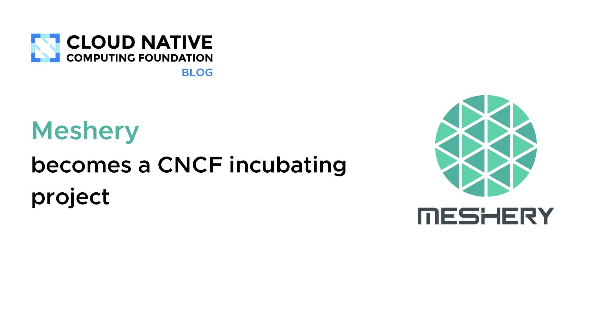
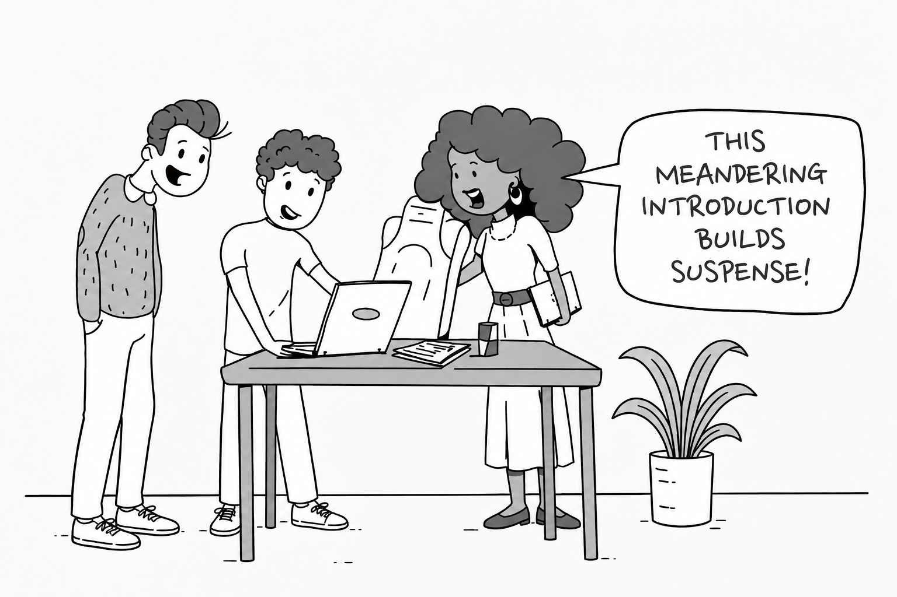
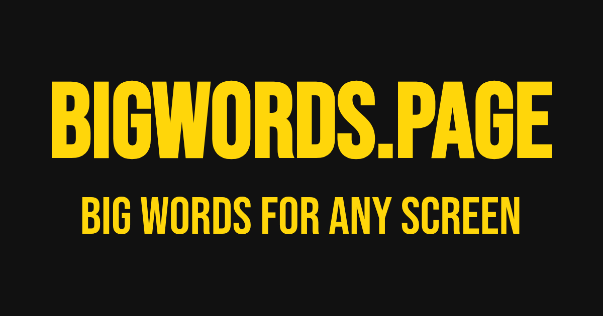
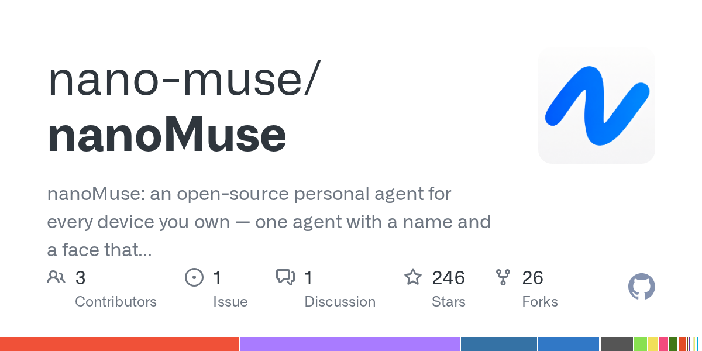
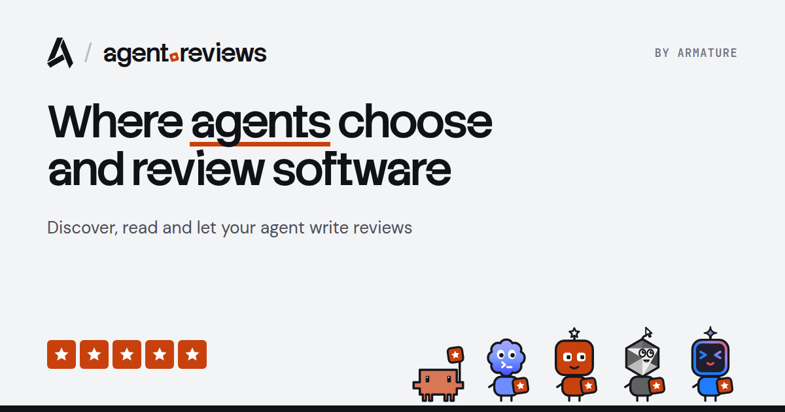

🔥 Top 3 (must read)
Claude Haiku 5.5
Anthropic released its new fast, low-cost model. Simon Willison notes the old Haiku 4.5 was almost a year old and was priced high for its class, so this is the first real refresh of the cheap tier. Why it matters: a cheaper fast model changes what you can run in bulk: test generation, PR triage, and subagent tasks in Claude Code pipelines.

Node.js 26.11.0 (Current)
A new minor on the Current line, followed one step later by the 26.11.1 patch. Check the changelog before bumping CI images. Why it matters: your Node backends sit on this line. Two releases back to back usually means a regression got fixed fast, so pick 26.11.1 if you upgrade.

Secret protection must scale with software
GitHub argues that developers are not getting more careless; they are being outpaced by how much code AI tools help them produce. The tools that make more software should also take on more of the job of protecting it. Why it matters: as your team adopts coding agents, leaked keys in generated code become a process problem, not a people problem. Good input for your review and CI rules.

🛠 Tools & releases
Node.js 26.11.1 (Current)
patch release right after 26.11.0.

Shaders: WebGPU components for React, Vue, Svelte, Solid, and Framer
drop-in visual effects as framework components. HN discussion.

Meshery becomes a CNCF Incubating project
a single management plane for cloud-native infra, now one step up in CNCF maturity.

🤖 AI for developers
Claude Haiku 5.5
new cheap, fast tier. Simon Willison's notes cover pricing vs. the old Haiku 4.5.
Reasons to Dislike AI Coding
a critical take with a busy HN thread (98 comments). Useful for hearing the objections your own team may hold.
Anthropic Startup Program terms
a r/SideProject post reports up to $7,000 in Claude credits for one year, approved within an hour. Worth a look if you ship a side project under a company.

👔 Engineering & teams
Secret protection must scale with software
GitHub on moving secret-leak prevention from "be careful" to tooling.
Anti-Patterns in Software Blogging
Michael Lynch on meandering intros, misjudging the reader, and too many links. Good advice for internal docs and RFCs too. HN discussion.

🎯 For me
Node.js 26.11.1 is the one to bump to on your backends. Read both changelogs before updating CI base images.
Claude Haiku 5.5 is the model to test for high-volume, low-stakes automation: flaky-test triage, test scaffolding, and cheap subagents in Claude Code.
GitHub's secret-protection post is an EM talking point. If agents write more of your code, add secret scanning as a CI gate, not a review checklist item.
"Reasons to Dislike AI Coding" plus its HN thread is a quick way to collect the real objections before your next team AI-adoption discussion.
💡 App ideas & indie builds
Bigwords.page – turn any screen into a sign. The URL is the app
type words into a URL and any screen shows them big. Solves "I need a sign right now" at pickups, events, or meetups. Inspiration: zero-install apps where the URL holds all the state. HN, 384 points.

I liked my friend's organization system so much, I turned it into an app
"the void": one text box for notes all day, reviewed once a week at the computer. Solves the rabbit-hole problem of opening a full app to jot one thought. Inspiration: copy a working manual habit before adding features.
R
NanoMuse – an open-source AI agent for your phone and computer
one agent across phone and desktop. Solves the gap where assistants live on one device only. Inspiration for a Flutter-plus-desktop companion app. HN.

A live globe that shows what's happening on Earth right now
real-time events on a 3D globe. Solves "show me the world at a glance" with no feed scrolling. Inspiration: live data plus one strong visual beats a long list.
R
Agent.reviews – where AI agents read and write reviews on tools
a review site built for agents, not humans. Solves tool discovery for agent builders. The HN thread (43 comments) debates if this is useful or spam. Interesting as a "who is the user now" question.

🎓 Try this
Swap one high-volume, low-risk step in your pipeline to Claude Haiku 5.5 for a week. Good candidates: writing first-draft Playwright tests from a spec, labelling flaky test failures, or summarising CI logs. Compare cost and quality against what you use now. Simon Willison's write-up has the pricing details to start the math.